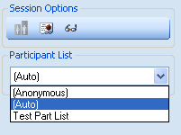

Deciding which type of Participant List to use in your TurningPoint Presentation:
Before running the presentation, you should first decide on what kind of Participant List you would like to use. Participants Lists are crucial to collecting student response data, so choose carefully. Locate the “Participation List” drop down menu located in the “Turning Point 2008” sidebar on the right hand side of your screen.
- Selecting Anonymous will collect data without recording clicker or participant information. This selection is useful when you are only concerned with group assessment, as it does not record student specific data. Answers are tallied in the order they were received.
- Selecting Auto will record response data specific to the clicker ID it was entered from, but will not assign this data to a specific student. You can always assign a clicker ID to a specific student after your Turning Point session if you wish.
- Selecting an existing Participation List will allow you to record data to a specific clicker that has been assigned to a specific student. This option will allow you to review specific individual student responses and allow you the option to either save the response data as an Excel Spreadsheet or to upload data to BlackBoard.
